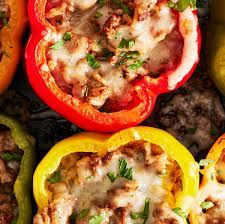

Stuffed Peppers

Very Filling and Nutritious
Classic stuffed peppers filled with beef, rice, tomato sauce, and cheese
make an easy weeknight supper.
Ingredients
- 1 pound 90% lean ground beef
- 1 1/4 tsp salt
- Heaping 1/4 tsp baking soda
- 3 large red, yellow, or orange bell peppers
- 1 medium yellow onion
- 3 tbs extra-virgin oil
- 3 minced garlic cloves
- 1 tsp chili powder
- 1 tsp ground cumin
- 1 tsp dried oregano
- 1 (8 oz) can tomato sauce
- 1 cup cooked rice
- 1 cup shredded Montery Jack or Cheddar Jack cheese
Steps
- Preheat the oven to 425°F and set an oven rack in the middle position
- Tenderize the beef: In a medium bowl, using your hands, mash the beef with 1 teaspoon of the salt and the baking soda. Let sit for 20 minutes while you continue with the recipe
- Line a 9x13-inch baking dish with aluminum foil for easy clean-up, if you like. Place the peppers, cut side up, in the baking dish; drizzle with 1 tablespoon of the oil and sprinkle with the remaining ¼ teaspoon salt
- Roast the peppers for about 20 minutes, until slightly browned and tender-crisp. A bit of liquid will accumulate in the bottom of the peppers; that's okay
- Meanwhile, heat the remaining 2 tablespoons of oil over medium heat in a large nonstick skillet. Add the onion and cook, stirring frequently, until soft and translucent, 3 to 4 minutes. Add the garlic and cook 1 minute more; do not brown. Add the ground beef mixture, chili powder, cumin, and oregano and increase the heat to medium high. Cook, breaking the meat up with a wooden spoon, until the meat is browned and almost cooked through, 4 to 5 minutes. Add the tomato sauce and bring to a boil; reduce the heat to medium low and cook, uncovered, until the meat is cooked through, 2 to 3 minutes. Add the rice and ¾ cup of the cheese, and stir until melted. Remove the skillet from the heat
- Remove the peppers from the oven and spoon the meat filling evenly into the peppers. Sprinkle with the remaining ¾ cup cheese and place back in the oven. Roast for 10 to 15 minutes, until the filling is hot and the cheese is melted and bubbling, and serve
- Make-Ahead Instructions: The peppers can be partially cooked and filled with the beef mixture up to 2 days ahead of time and refrigerated, or frozen in an airtight container for up to 3 months. When ready to serve, defrost overnight in the refrigerator if frozen, cover the dish with foil, and bake in a 425°F-oven for about 15 minutes. Remove the dish from the oven and remove and discard the foil. Top the peppers with the cheese and place back in the oven for about 5 minutes, or until the filling is heated through and the cheese is melted